VOLKSWAGEN PASSAT – Komfortowy sedan z 2016 roku, idealny dla osób ceniących wygodę i bezpieczeństwo. Model ten wyróżnia się bogatym wyposażeniem oraz nowoczesnymi rozwiązaniami technologicznymi. Samochód zarejestrowany 6 października 2016 roku, posiada 4 drzwi i 5 miejsc siedzących.
Wyposażenie:
- ABS
- Airbag 6 sztuk (czołowe poduszki kierowcy i pasażera, boczne poduszki - przód, kurtyny powietrzne),
- Aktywny system bezpieczeństwa PreCrash Basic & Front - domykanie szyb, wstępne
napinanie pasów bezp.,
- Asystent siły hamowania,
- Czujnik ciśnienia w oponach,
- Czujnik deszczu,
- Czujnik odległości przy parkowaniu przód, tył,
- Czujnik zmierzchu - automatyczne włączanie świateł z funkcją Coming/Leaving Home,
- ESP - system stabilizacji toru jazdy,
- Elektryczne podnoszenie szyb, przód i tył,
- Elementy dekor. w poler. drewnie Brilliant Pine: deska rozdz. i drzwi,
- Piano Black: konsola,
- Felgi aluminiowe 17 London z ogumieniem 215/55,
- Fotel kierowcy ergo Comfort z elektryczną regulacją odcinka lędźwiowego,
- Fotele przednie - podgrzewane,
- Fotele przednie komfortowe,
- Gniazdo 12V w bagażniku,
- Hamulec postojowy elektromechaniczny z funkcją Auto-Hold,
- Kierownica wielofunkcyjna 3-ramienna w skórze z funkcją zmiany biegów,
- Kierunkowskazy LED w obudowie lusterek zewnętrznych,
- Klimatyzacja automatyczna Climatronic - 3 strefowa,
- Kolumna kierownicy regulowana w dwóch płaszczyznach,
- Komputer pokładowy MFA Premium z kolorowym wyświetlaczem TFT,
- Lampy tylne wykonane w technologii LED (diodowe), przyciemniane,
- Listwy dookoła szyb bocznych, chromowane,
- Listwy na osłonie wlotu powietrza do chłodnicy, chromowane,
- Listwy progowe ze stali szlachetnej z napisem Passat,
- Listwy w dolnej części drzwi oraz zderzaka przedniego, chromowane,
- Lusterka boczne elektrycznie regulowane i ogrzewane, po stronie kierowcy asferyczne,
- Lusterka boczne składane elektrycznie automatycznie przyciemniane od kierowcy,
- Lusterka make-up w osłonach p/słonecznych, podświetlane LED,
- Lusterko boczne po stronie kierowcy automatycznie przyciemniające się,
- Lusterko po stronie pasażera automatycznie obniżane podczas cofania,
- Lusterko wsteczne automatycznie przyciemniające się,
- MSR- układ przeciwblokujący przy hamowaniu silnikiem,
- Ogrzewane dysze spryskiwaczy szyby przedniej,
- Oświetlenie podłoża podczas wsiadania i wysiadania z samochodu,
- Radio CD/MP3 Composition Colour z 5 calowym kolorowym ekranem dotykowym, 8 głośników, SD, AUX-IN,
- Relingi dachowe - chromowane,
- Schowek w desce rozdzielczej po stronie pasażera, podświetlany, zamykany z funkcją chłodzenia,
- Schowek w konsoli środkowej z przodu z 2 miejscami na napoje, zamykany żaluzją,
- System Keyless Go - bezkluczykowe uruchamianie pojazdu,
- System Start/Stop,
System automatycznego hamowania po kolizji,
- System rekuperacji odzyskujący energię podczas hamowania,
- System stabilizacji toru jazdy przyczepy,
- System wykrywania zmęczenia kierowcy,
- Tempomat adaptacyjny do 210km z City Emergency Braking,
- kierownica skórzana wielofunkcyjna.,
- Uchwyty ISOFIX do instalacji fotelika dziecięcego, tył,
- Wspomaganie kierownicy, elektromechaniczne, zależne od prędkości,
- Wybór profilu jazdy - możliwość wyboru trybu jazdy: COMFORT, SPORT, NORMAL, ECO, INDIVIDUAL,
- Wykończenie wnętrza Szczotkowane aluminium/Piano Black,
- Zamek centralny z pilotem,
- Światła do jazdy dziennej,
- Światła przeciwmgielne z funkcją doświetlania skrętu,
- Active Info Display - aktywny wyświetlacz wielofunkcyjny na tablicy zegarów,
- Alarm z niezależnym zasilaniem, f. dozoru wnętrza i czujnikiem przechyłu,
- App-Connect - umożliwia wyświetlanie aplikacji smartphona na ekranie
radia/nawigacji (AUX/USB/iPod),
- Fotele przednie - klimatyzowane i z funkcją masażu,
- Funkcja obsługi głosowej (dla systemów Composition Media i Discover Media),
- Head-up Display, L
- Pakiet Business,
- Pakiet oświetlenie Ambient,
- System nawigacji satelitarnej Discover Pro z dotykowym ekranem (8,0),
- Szyby tylne dodatkowo przyciemniane,
- Tapicerka skórzana Nappa dla siedzeń komfortowych z przodu,
Wszystkie informacje zawarte w tym ogłoszeniu należy potwierdzić u sprzedawcy.
Auto w pełni sprawne, zadbane, regularnie serwisowane. Gotowe do jazdy.
Sprzedaż na FV 23% – cena brutto: 53 900 zł
Lokalizacja:
ICM
ul. Marcina Kasprzaka 23 B
06-400 Ciechanów
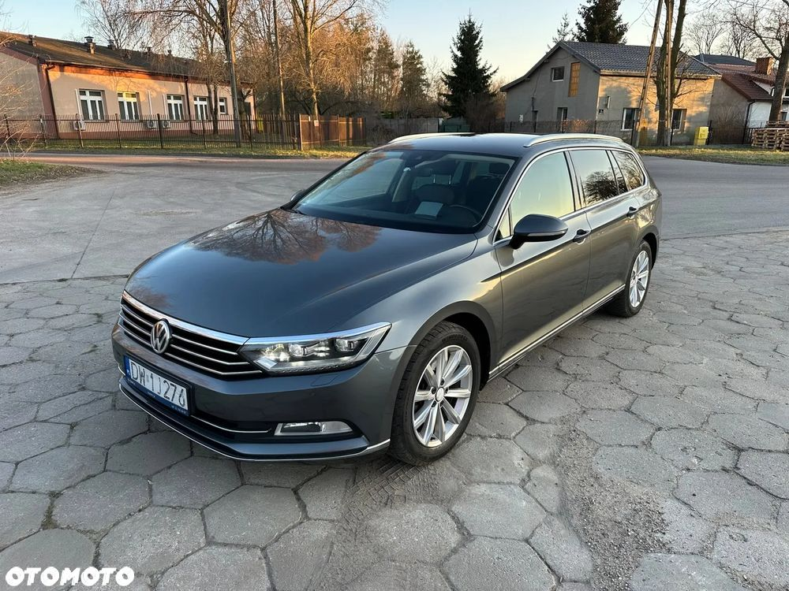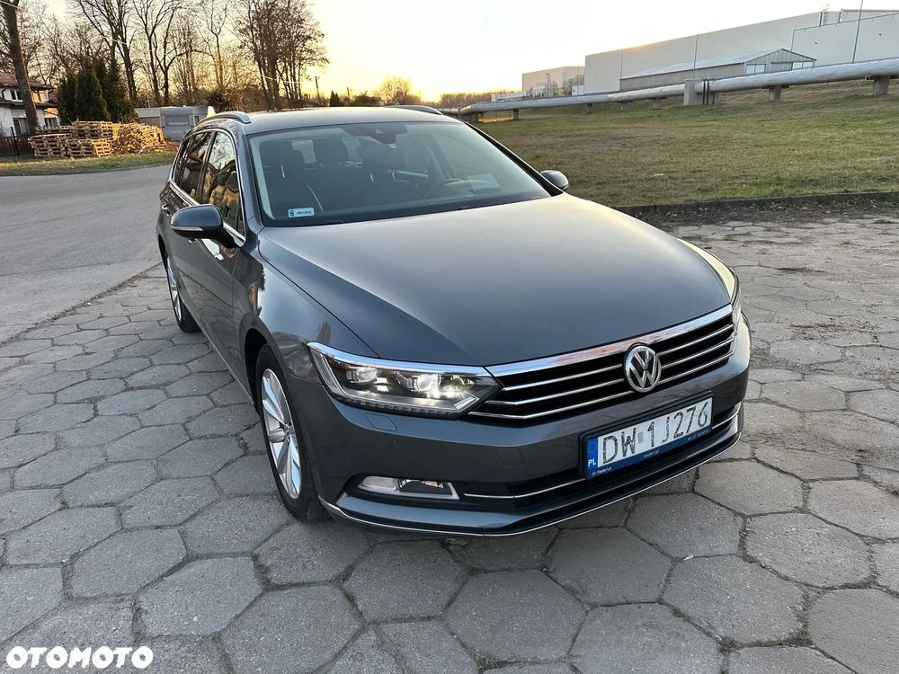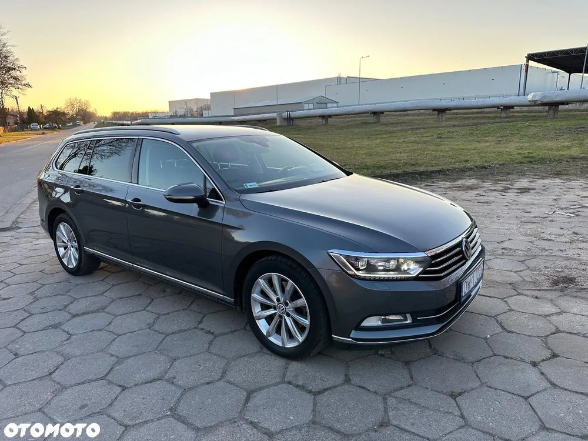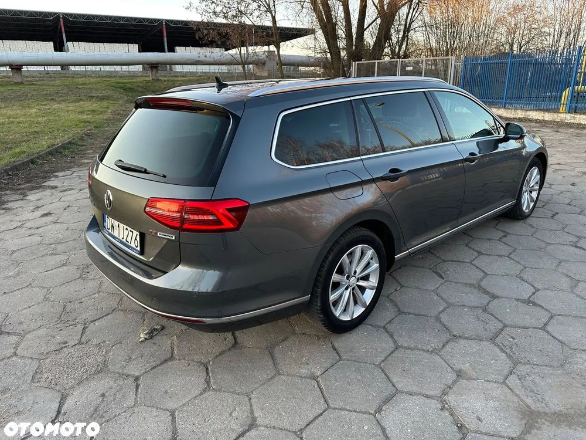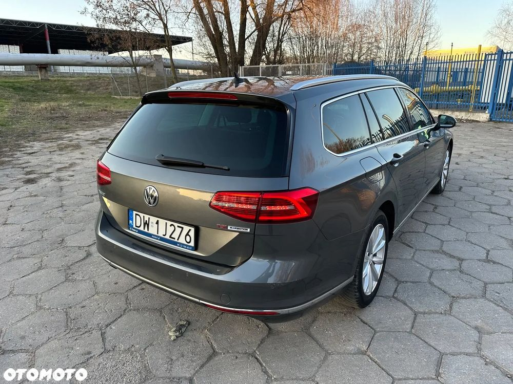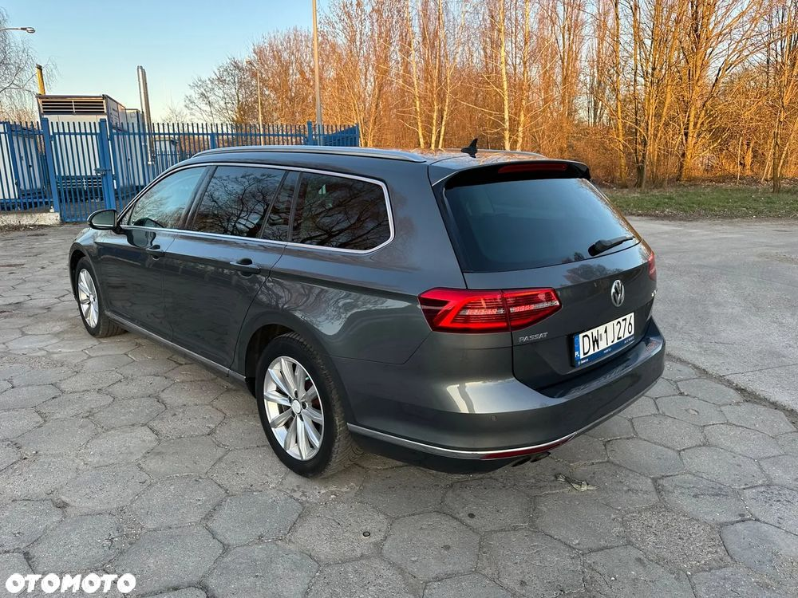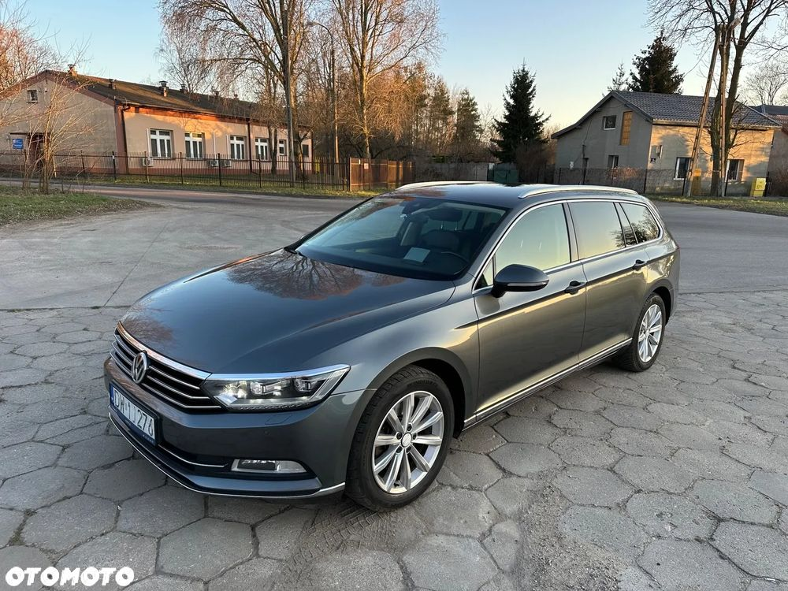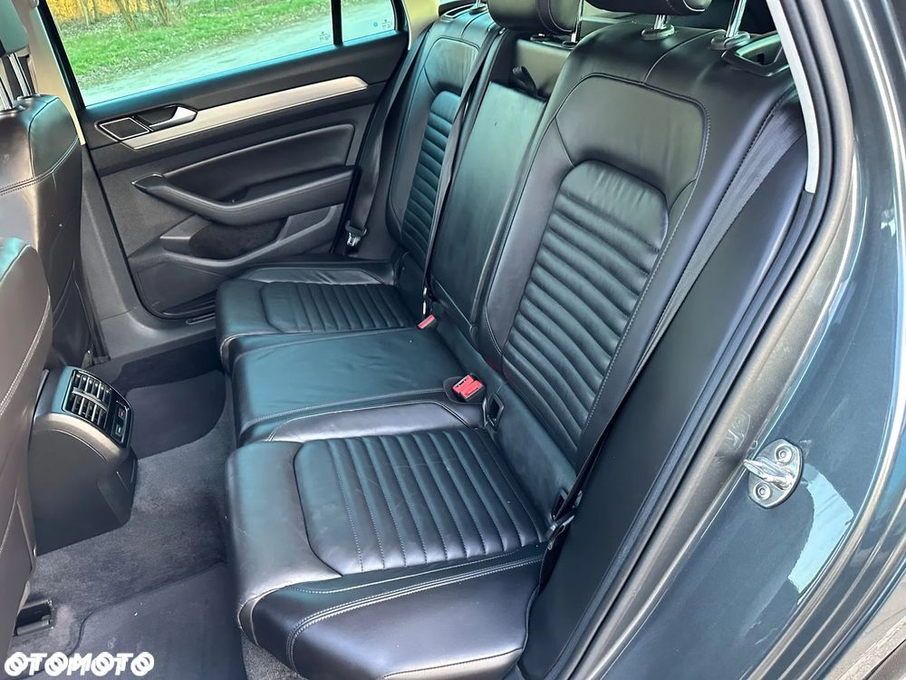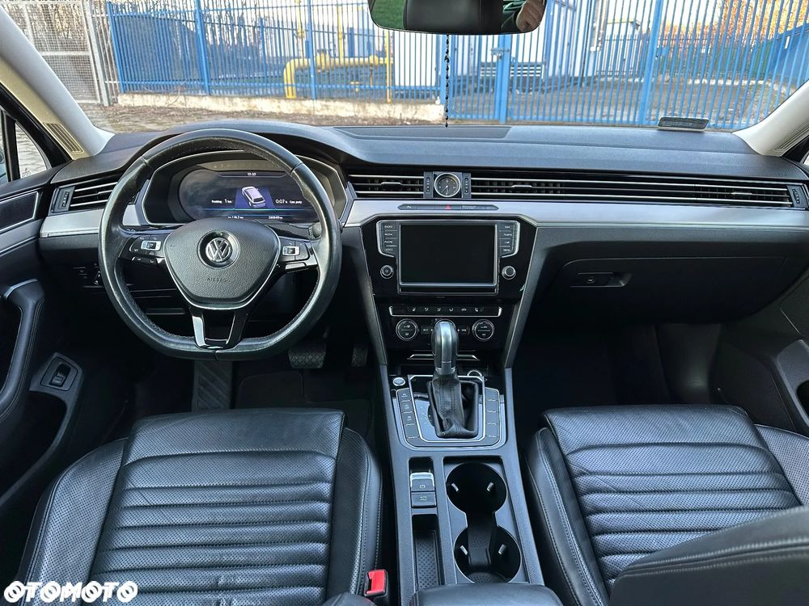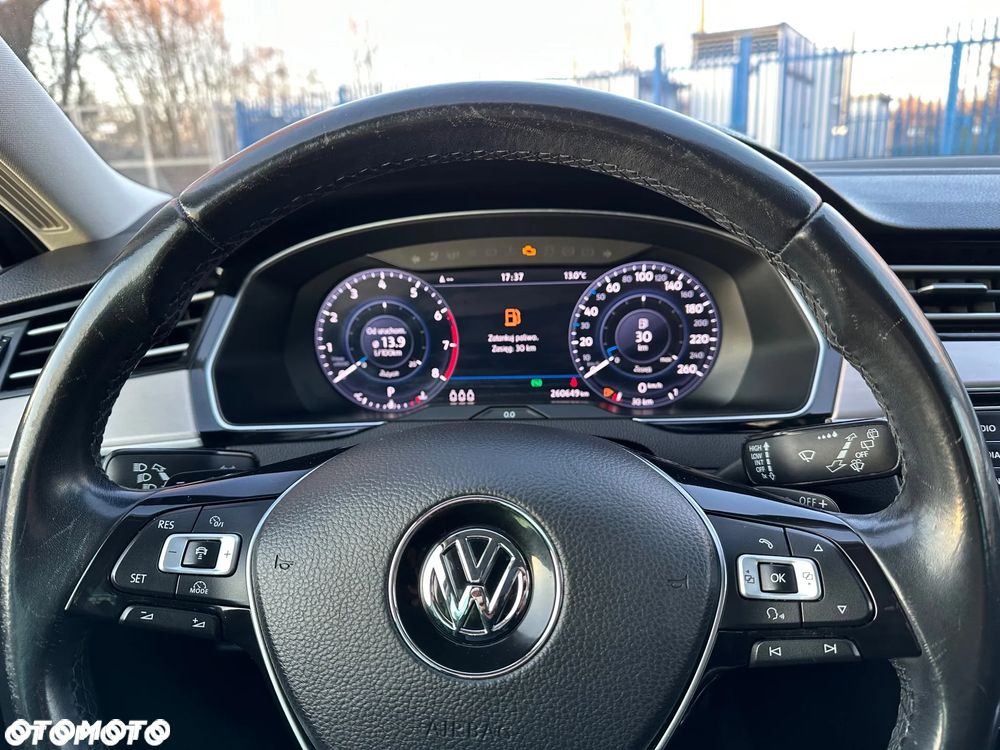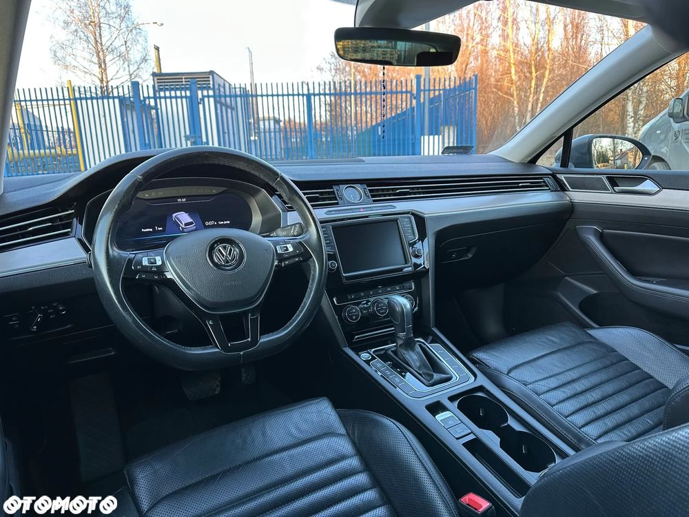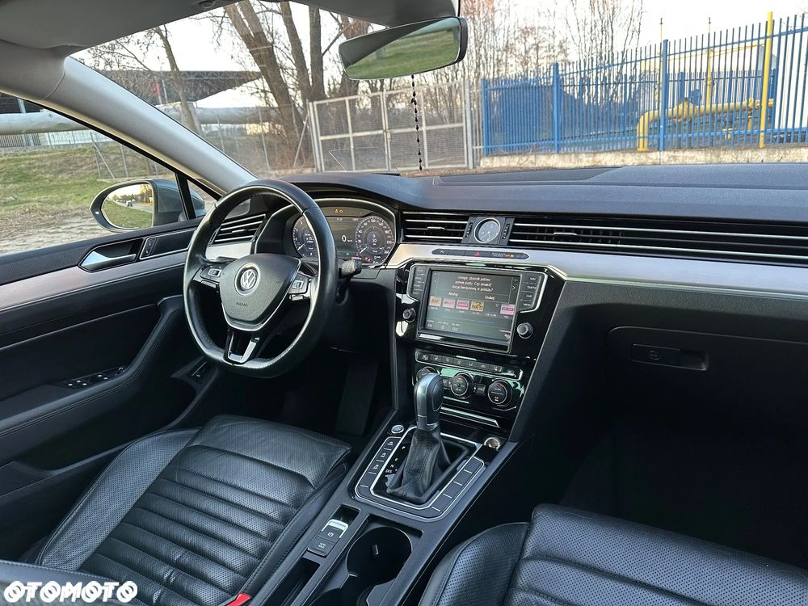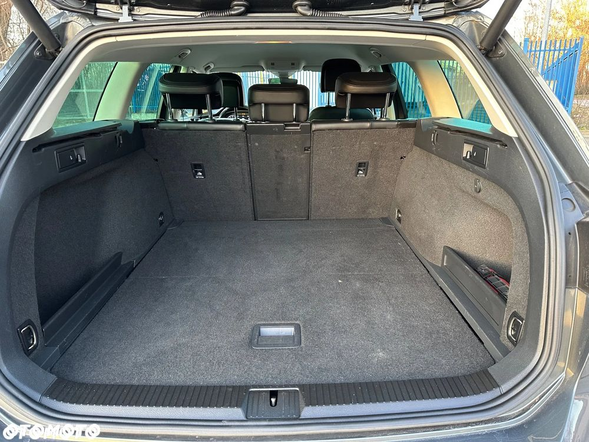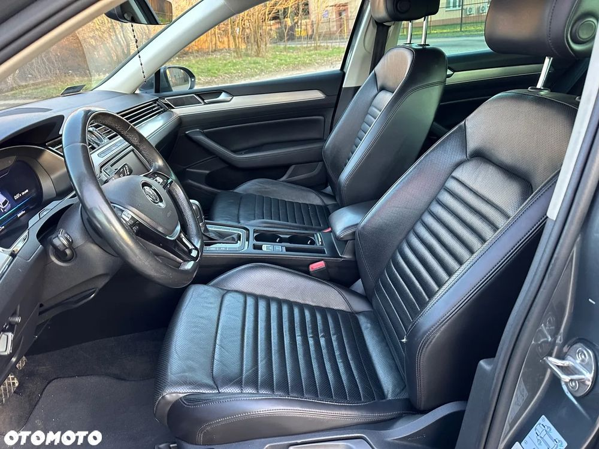